Carreras Técnicas
Formación práctica y especializada para el mundo laboral.


Para jóvenes
 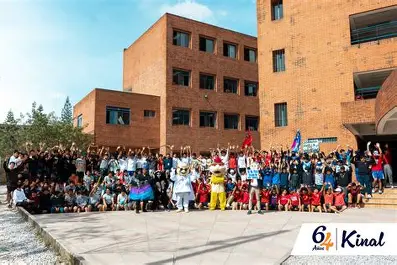
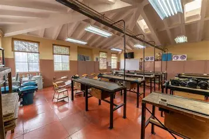
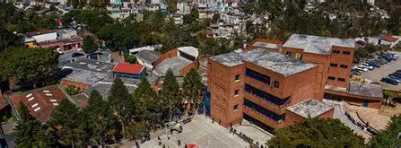
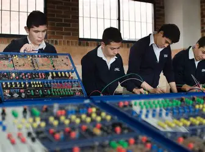
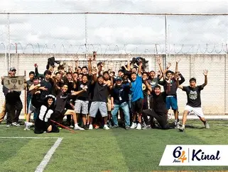
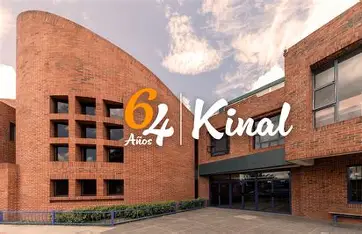
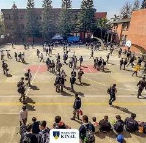
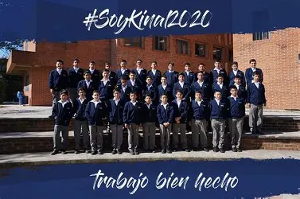
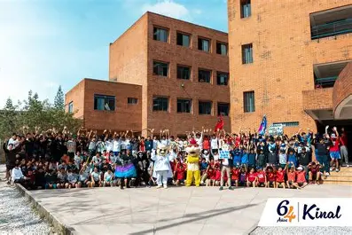
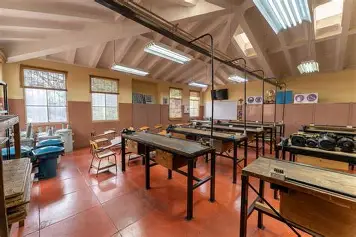
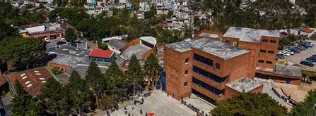
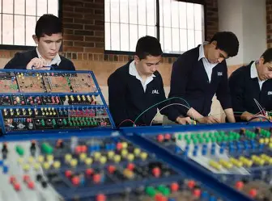
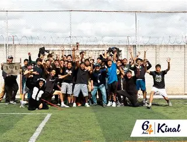
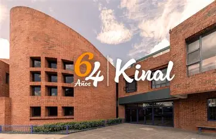
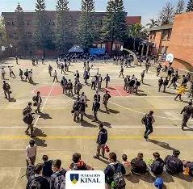
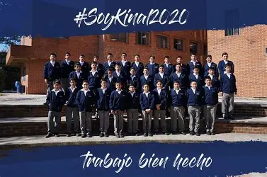
Fundación Kinal es una institución educativa que forma jóvenes y adultos en áreas técnicas, tecnológicas y humanas, promoviendo valores, disciplina y excelencia académica.
Nuestro objetivo es brindar oportunidades reales de crecimiento personal y profesional, impactando positivamente en la sociedad guatemalteca.

Años de experiencia
Estudiantes formados
Inserción laboral
Empresas aliadas
Formación práctica y especializada para el mundo laboral.
Base académica sólida con enfoque en valores.
Preparación integral para estudios superiores.
Cursos técnicos para jóvenes y adultos.
Construye tu futuro con una educación técnica de calidad.
Inscríbete Ahora